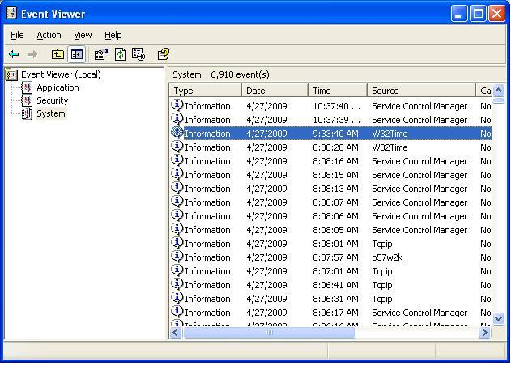
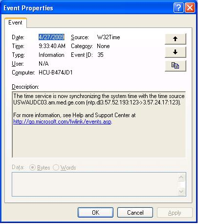
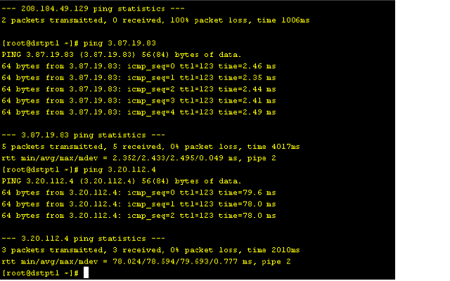

Operating Documentation
Direction 5193574-800, Rev# 22
LightSpeed 7.X Service Methods
Module Version 1.0, Version Date 5/7/10
Operating Documentation |
| Required Persons | Preliminary Reqs | Procedure | Finalization |
|---|---|---|---|
| 1 | Not Applicable | Not Applicable | Not Applicable |
The following procedure describes and illustrates connecting a system to a hospital or clinic Network Time Protocol (NTP) Server.
NTP is a protocol for synchronizing the clocks of computer systems over a network. On a Local Area Network (LAN), NTP can be used to synchronize all clocks to the same time scale. Below are a couple of the benefits to connect the system to a NTP server:
Synchronize time between multiple systems (CT to CT)
Synchronize time between system and data storage (CT to PACS)
Maintains time to prevent any system time jumps or discrepancies.
| Last Revised: | 10 Jun 2009 |
| NOTE: | It is best to first discuss with the site's IT Department to determine if there is a specific Service IP Address preferred to connect to (e.g. same IP Address as PACS or other CT systems). If an IP Address is provided, skip to step 2. |
Using a PC connected to the site's local network, determine the NTP server available.
On LAN connected PC, select [START] button, then [Run].
Type: eventvwr.msc<ENTER>
Select [System]
Double-click W32Time
Illustration 1: Event Viewer

In the [Event] tab, look in the Description section
Illustration 2: Event Properties

Record IP Address from Description.
Ping the IP Address on the system.
Open a Unix shell on the scanner.
Type: ping 3.57.52.193 <ENTER>
| NOTE: | Use the IP Address you recorded previously. |
Illustration 3: Ping

Perform system config to update the scanner to use NTP.
Become root:
Type: su -<ENTER>
Enter root password.
Type: reconfig
Select [CONFIG]
Select NETWORK tab.
Enter the IP Address previously recorded in the NTP section.
No finalization steps.